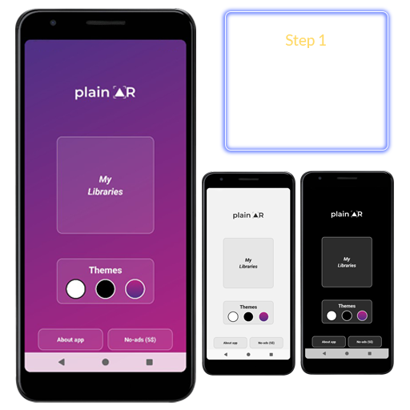
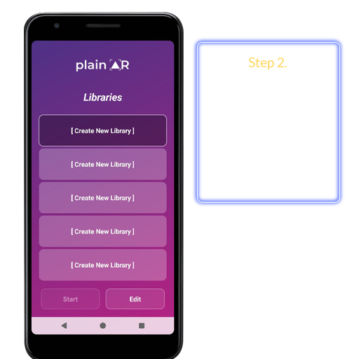
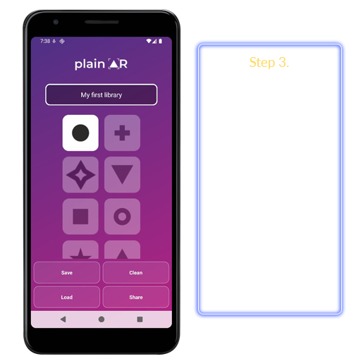
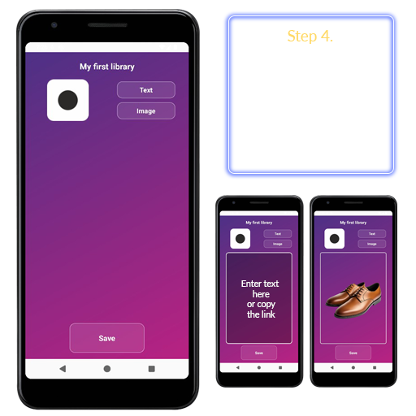
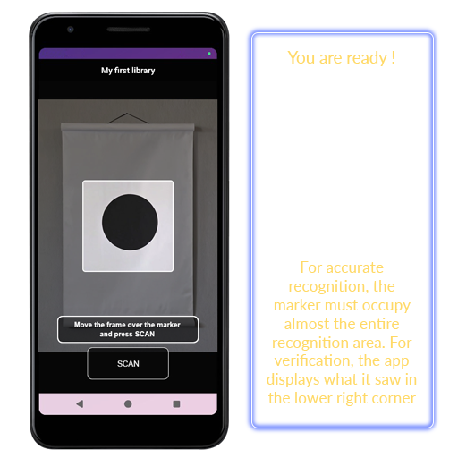

• • • how to apply this
Entertainment, Holidays, and Games
Home Quests (Scavenger Hunts): Users can organize a quest for children, their significant other, or friends. Cards with figures (markers) are pasted or placed around the house. By pointing the camera, the player receives text clues or picture maps that lead to the next point or a hidden gift.
Living Cards and Photo Albums: You can give a loved one a regular card with a specific figure (or design element) drawn on it. When you point the camera at the PlainAR card, it "comes to life"—a hidden text greeting, a poem, or a memorable family photo appears.
Interactive Board Games (DIY): Board game enthusiasts can create their own cards. Pointing a smartphone at a figure on a map or character card can instantly reveal its hidden stats, spells, or location descriptions.
Home and Space Organization (DIY Smart Home)
Marking Boxes and Storage Systems: Dozens of identical boxes are often stored in a pantry, closet, or garage. By attaching shape markers to them, PlainAR can be used to "scan" the boxes on shelves and instantly display a text list of what's inside or a photo of the contents. No need to open or rummage through anything.
Interactive Refrigerator: Instead of traditional magnets, use shape markers. By pointing the camera at them, family members can leave each other shopping lists, reminders, or sweet notes.
Children and Creativity
Educational Flashcards for Children: Parents can create interactive flashcards for learning languages, counting, or the names of objects. The child sees a geometric shape, points the phone at it, and learns the word (an animal picture or text appears on the screen).
Bringing Children's Drawings to Life: If a child has drawn a house with clear geometric shapes (a triangular roof, a square window), parents can associate "residents" or fairytale text with these shapes. For the child, it will feel like real magic.
Social interaction and community
Secret message exchange: Friends can share library files and wander around the city, like in a spy movie, reading hidden messages.
Enthusiast tours: Enthusiasts can create AR tours of their neighborhood or park and share these libraries on social media.
• • • how it work






to obtain the most accurate results